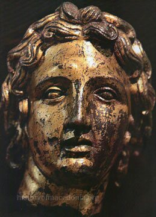
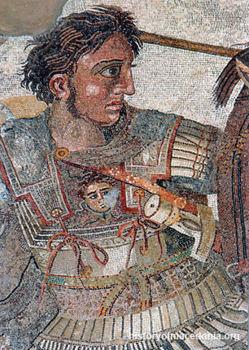

 Synopsis
Conqueror and king of Macedonia, Alexander the Great was born on July 20, 356 B.C., in Pella, in the Ancient Greek kingdom of Macedonia. During his leadership, from 336 to 323 B.C., he united the Greek city-states and led the Corinthian League. He also became the king of Persia, Babylon and Asia, and created Macedonian colonies in the region. While considering the conquests of Carthage and Rome, Alexander died of malaria in Babylon (now Iraq), on June 13, 323 B.C.
Cavalry commander at age eighteen, king at twenty, conqueror of the Persian Empire at twenty-six, explorer of the Indian frontier at thirty. Alexander’s conquests created a legend that would provide the standard by which other leaders measured their careers.
Although we lack sufficient details about his character, there was no doubt that he was an inspiring leader and personally a very brave soldier. He was ruthless toward those who opposed him—even from within his own ranks—but fair and honest toward those who exhibited courage and skill.
Early Life
Alexander the Great was born in the Pella region of the Ancient Greek kingdom of Macedonia on July 20, 356 B.C., to parents King Philip II of Macedon and Queen Olympia, daughter of King Neoptolemus. Alexander received his earliest education under the tutelage of his relative, the stern Leonidas of Epirus. Leonidas, who had been hired by King Phillip to teach Alexander math, horsemanship and archery, struggled to control his rebellious student. In 343 B.C., King Philip II hired the philosopher Aristotle to tutor Alexander at the Temple of the Nymphs at Meiza. Over the course of three years, Aristotle taught Alexander and a handful of his friends philosophy, poetry, drama, science and politics.
King of Macedonia
In 336, Alexander's sister wed the Molossian king, an uncle who was also called Alexander. During the festival that followed, King Philip II was murdered at the hands of Pausanias, a Macedonian noble. In the wake of his father's death, Alexander, then 19, was determined to seize the throne by any means necessary. He quickly garnered the support of the Macedonian army, including the general and troops he had fought with at Chaeronea.
 Campaigns and Conquests
As Alexander was nearing the end of his northern campaign, he was delivered the news that Thebes, a Greek city-state, had forced out the Macedonian troops that were garrisoned there. Fearing a revolt among the other city-states, Alexander leapt into action, marching his massive army—consisting of 3,000 cavalry and 30,000 infantry—southward all the way to the tip of the Greek peninsula. Meanwhile, Alexander's general, Parmenion, had already made his way to Asia Minor. Alexander and his forces arrived in Thebes so quickly that the city-state didn't have a chance to pull together allies for its defense. Three days after his arrival, Alexander led the massacre of Thebes. It was Alexander's hope that the destruction of Thebes would serve as a warning to city-states contemplating revolt. His intimidation tactic proved effective; the other Greek city-states, including Athens, chose to pledge their alliance to the Macedonian Empire or opted to remain neutral. In 334, Alexander embarked on his Asiatic expedition, arriving in Troy that spring. Alexander then faced Persian King Darius III's army near the Grancius River; Darius' forces were swiftly defeated. By fall, Alexander and his army had made it across the southern coast of Asia Minor to Gordium, where they took the winter to rest. In the summer of 333, the troops of Alexander and Darius once again went head to head in battle at Issus. Although Alexander's army was outnumbered, he used his flair for military strategy to create formations that defeated the Persians again and caused Darius to flee. In November of 333, Alexander declared himself the king of Persia after capturing Darius and making him a fugitive. Next up on Alexander's agenda was his campaign to conquer Egypt. After besieging Gaza on his way to Egypt, Alexander easily achieved his conquest; Egypt fell without resistance. In 331, he created the city of Alexandria, designed as a hub for Greek culture and commerce. Later that year, Alexander defeated the Persians at the Battle of Gaugamela. With the collapse of the Persian army, Alexander became "King of Babylon, King of Asia, King of the Four Quarters of the World." Alexander's next conquest was eastern Iran, where he created Macedonian colonies and in 327 seized the fortress in Ariamazes. After capturing Prince Oxyartes, Alexander married the prince's daughter, Rhoxana. In 328, Alexander defeated King Porus' armies in northern India. Finding himself impressed by Porus, Alexander reinstated him as king and won his loyalty and forgiveness. Alexander forged eastward to the Ganges but headed back when his armies refused to advance any farther. On their way back along the Indus, Alexander was wounded by Malli warriors. In 325, after Alexander had recovered, he and his army headed north along the rugged Persian Gulf, where many fell prey to illness, injury and death. In February 324, Alexander at last reached the city of Susa. Desperate to retain his leadership and recruit more soldiers, he tried to connect Persian nobles to Macedonians in order to create a ruling class. To this end, at Susa he commanded that a large number of Macedonians marry Persian princesses. After Alexander managed to recruit tens of thousands of Persian soldiers into his army, he dismissed many of his existing Macedonian soldiers. This enraged the soldiers, who spoke critically of Alexander's new troops and condemned him for adopting Persian customs and manners. Alexander appeased the Macedonian soldiers by killing 13 Persian military leaders. The Thanksgiving Feast at Susa, which had been geared towards solidifying the bond between Persians and Macedonians, shaped up to be quite the opposite.
Death
While considering the conquests of Carthage and Rome, Alexander the Great died of malaria in Babylon (now Iraq), on June 13, 323 B.C. He was just 32 years old. Rhoxana gave birth to his son a few months later. After Alexander died, his empire collapsed and the nations within it battled for power. Over time, the cultures of Greece and the Orient synthesized and thrived as a side effect of Alexander's empire, becoming part of his legacy and spreading the spirit of Panhellenism.